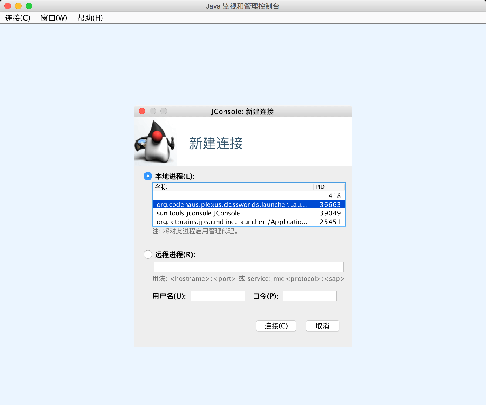
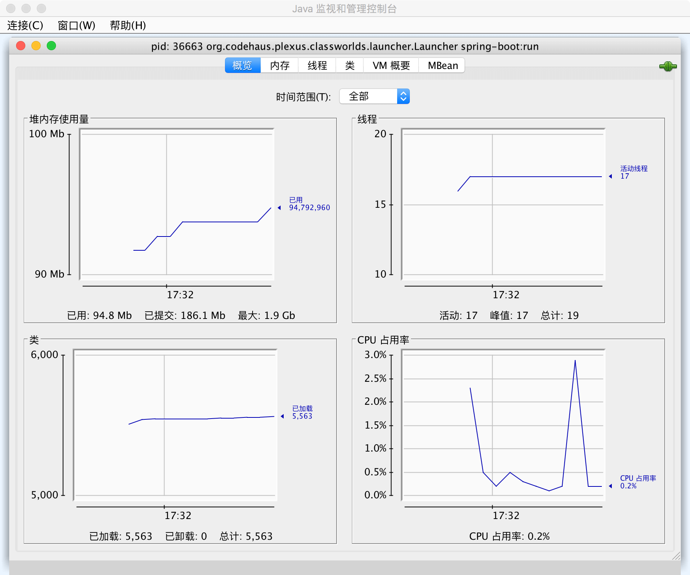
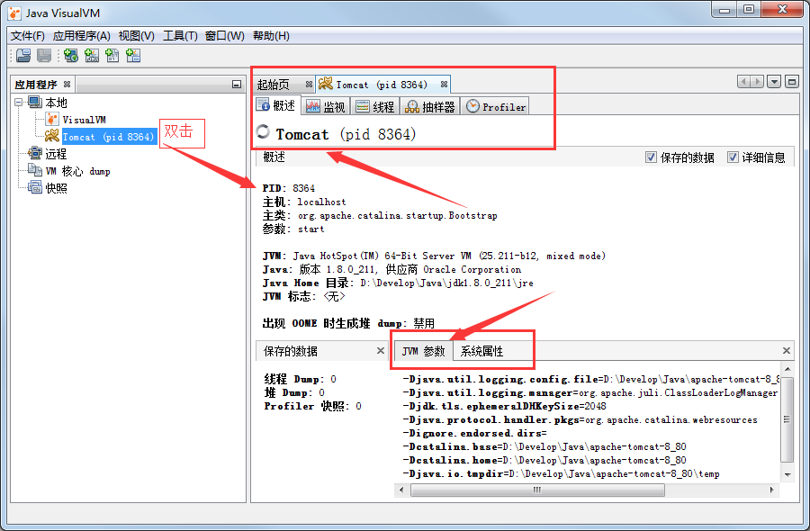
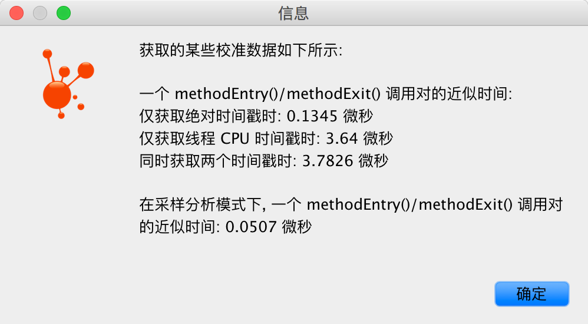
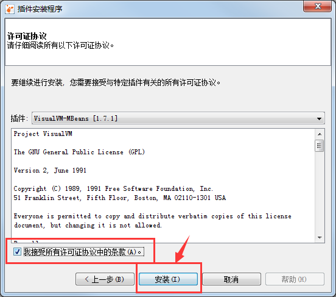
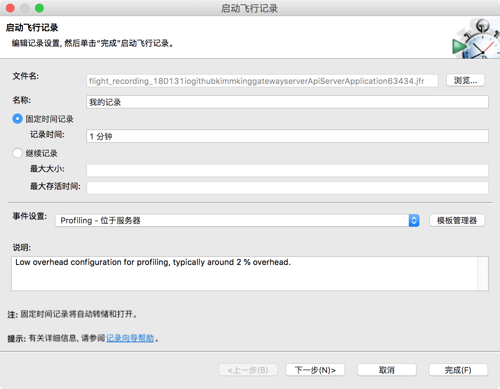
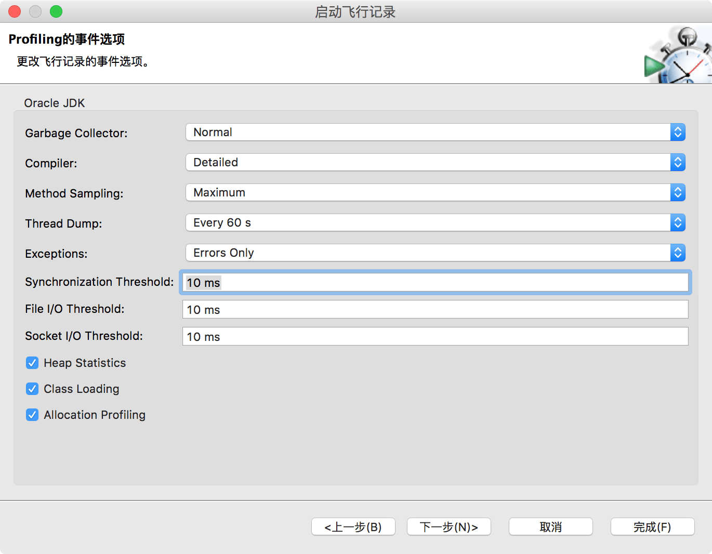
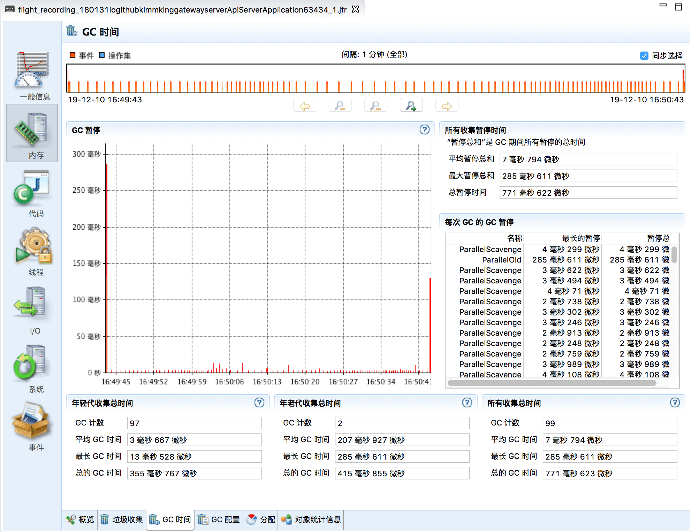
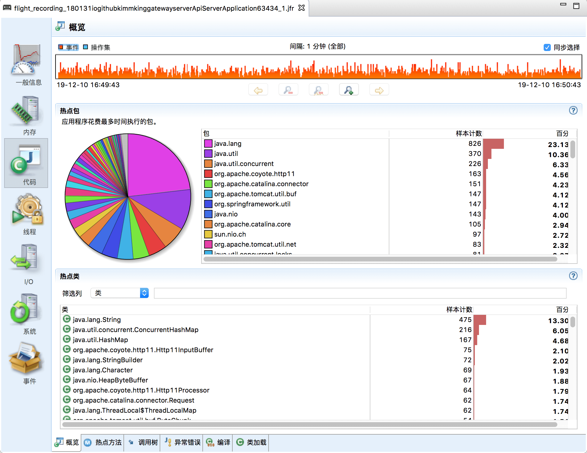

- 01 阅读此专栏的正确姿势.md.html
- 02 环境准备：千里之行，始于足下.md.html
- 03 常用性能指标：没有量化，就没有改进.md.html
- 04 JVM 基础知识：不积跬步，无以至千里.md.html
- 05 Java 字节码技术：不积细流，无以成江河.md.html
- 06 Java 类加载器：山不辞土，故能成其高.md.html
- 07 Java 内存模型：海不辞水，故能成其深.md.html
- 08 JVM 启动参数详解：博观而约取、厚积而薄发.md.html
- 09 JDK 内置命令行工具：工欲善其事，必先利其器.md.html
- 10 JDK 内置图形界面工具：海阔凭鱼跃，天高任鸟飞.md.html
- 11 JDWP 简介：十步杀一人，千里不留行.md.html
- 12 JMX 与相关工具：山高月小，水落石出.md.html
- 13 常见的 GC 算法（GC 的背景与原理）.md.html
- 14 常见的 GC 算法（ParallelCMSG1）.md.html
- 15 Java11 ZGC 和 Java12 Shenandoah 介绍：苟日新、日日新、又日新.md.html
- 16 Oracle GraalVM 介绍：会当凌绝顶、一览众山小.md.html
- 17 GC 日志解读与分析（基础配置）.md.html
- 18 GC 日志解读与分析（实例分析上篇）.md.html
- 19 GC 日志解读与分析（实例分析中篇）.md.html
- 20 GC 日志解读与分析（实例分析下篇）.md.html
- 21 GC 日志解读与分析（番外篇可视化工具）.md.html
- 22 JVM 的线程堆栈等数据分析：操千曲而后晓声、观千剑而后识器.md.html
- 23 内存分析与相关工具上篇（内存布局与分析工具）.md.html
- 24 内存分析与相关工具下篇（常见问题分析）.md.html
- 25 FastThread 相关的工具介绍：欲穷千里目，更上一层楼.md.html
- 26 面临复杂问题时的几个高级工具：它山之石，可以攻玉.md.html
- 27 JVM 问题排查分析上篇（调优经验）.md.html
- 28 JVM 问题排查分析下篇（案例实战）.md.html
- 29 GC 疑难情况问题排查与分析（上篇）.md.html
- 30 GC 疑难情况问题排查与分析（下篇）.md.html
- 31 JVM 相关的常见面试问题汇总：运筹策帷帐之中，决胜于千里之外.md.html
- 32 应对容器时代面临的挑战：长风破浪会有时、直挂云帆济沧海.md.html
- 捐赠
10 JDK 内置图形界面工具：海阔凭鱼跃，天高任鸟飞
GUI 图形界面工具，主要是 3 款：JConsole、JVisualVM、JMC。其实这三个产品可以说是 3 代不同的 JVM 分析工具。
这三个工具都支持我们分析本地 JVM 进程，或者通过 JMX 等方式连接到远程 JVM 进程。当然，图形界面工具的版本号和目标 JVM 不能差别太大，否则可能会报错。
下面分别对它们进行介绍。
JConsole
JConsole，顾名思义，就是“Java 控制台”，在这里，我们可以从多个维度和时间范围去监控一个 Java 进程的内外部指标。进而通过这些指标数据来分析判断 JVM 的状态，为我们的调优提供依据。
在 Windows 或 macOS 的运行窗口或命令行输入 jconsole，然后回车，可以看到如下界面：

本地进程列表列出了本机的所有 Java 进程（远程进程我们在 JMX 课程进行讲解），选择一个要连接的 Java 进程，点击连接，然后可以看到如下界面：

注意，点击右上角的绿色连接图标，即可连接或断开这个 Java 进程。
上图中显示了总共 6 个标签页，每个标签页对应一个监控面板，分别为：
- 概览：以图表方式查看 Java 进程的堆内存、线程、类、CPU 占用率四项指标和历史。
- 内存：JVM 的各个内存池的使用情况以及明细。
- 线程：JVM 内所有的线程列表和具体的状态信息。
- 类：JVM 加载和卸载的类数量汇总信息。
- VM 概要：JVM 的供应商、运行时间、JVM 参数，以及其他数据的摘要。
- MBean：跟 JMX 相关的 MBean，我们在后面的 JMX 课程中进行讲解。
概览
概览信息见上图，四项指标具体为：
- 堆内存使用量：此处展示的就是前面 Java 内存模型课程中提到的堆内存使用情况，从图上可以看到，堆内存使用了 94MB 左右，并且一直在增长。
- 线程：展示了 JVM 中活动线程的数量，当前时刻共有 17 个活动线程。
- 类：JVM 一共加载了 5563 个类，没有卸载类。
- CPU 占用率：目前 CPU 使用率为 0.2%，这个数值非常低，且最高的时候也不到 3%，初步判断系统当前并没有什么负载和压力。
在概览面板中，我们可以看到从 JConsole 连接到 Java 进程之后的所有数据。但是如果从连接进程到现在的时间很长，比如 2 天，那么这里的图表就因为要在一个界面展示而挤压到一起，历史的数据被平滑处理了，当前的变化细节就看不清楚。
所以，JConsole 提供了多个时间范围供我们选择，点击时间范围后面的下拉列表，即可查看不同区间的数据。有如下几个时间维度可供选择：
1 分钟、5 分钟、10 分钟、30 分钟、1 小时、2 小时、3 小时、6小时、12 小时、1 天、7 天、1 个月、3 个月、6 个月、1 年、全部，一共是 16 档。
当我们想关注最近 1 小时或者 1 分钟的数据，就可以选择对应的档。旁边的 3 个标签页（内存、线程、类），也都支持选择时间范围。
内存
内存监控，是 JConsole 中最常用的面板。内存面板的主区域中展示了内存占用量随时间变化的图像，可以通过这个图表，非常直观地判断内存的使用量和变化趋势。
同时在左上方，我们可以在图表后面的下拉框中选择不同的内存区：
本例中，我们使用的是 JDK 8，默认不配置 GC 启动参数。关于 GC 参数的详情请关注后面的 GC 内容，可以看到，这个 JVM 提供的内存图表包括：
- 堆内存使用量，主要包括老年代（内存池“PS Old Gen”）、新生代（“PS Eden Space”）、存活区（“PS Survivor Space”）；
- 非堆内存使用量，主要包括内存池“Metaspace”、“Code Cache”、“Compressed Class Space”等；
- 可以分别选择对应的 6 个内存池。
通过内存面板，我们可以看到各个区域的内存使用和变化情况，并且可以：
- 手动执行 GC，见图上的标号 1，点击按钮即可执行 JDK 中的 System.gc()，直接触发 GC 操作，一般来说，除非启动时明确指定了禁止手动 GC，否则 JVM 都会立刻执行 FullGC（猜一下前些年出租 JSP 空间的供应商会怎么选择）；
- 通过图中右下角标号 2 的界面，可以看到各个内存池的百分比使用率，以及堆/非堆空间的汇总使用情况，这个图会实时变化，同时可以直接点击这里的各个部分快速切换上方图表，显示对应区域的内存使用情况；
- 从左下角标号 3 的界面，可以看到 JVM 使用的垃圾收集器，以及执行垃圾收集的次数，以及相应的时间消耗。
打开一段时间以后，我们可以看到内存使用量出现了直线下降（见下图），这表明刚经过了一次 GC，也就是 JVM 执行了垃圾回收。
其实我们可以注意到，内存面板其实相当于是 jstat -gc 或 jstat -gcutil 命令的图形化展示，它们的本质是一样的，都是通过采样的方式拿到JVM各个内存池的数据进行统计，并展示出来。
其实图形界面存在一个问题，如果 GC 特别频繁，每秒钟执行了很多次 GC，实际上图表方式就很难反应出每一次的变化信息。
线程
线程面板展示了线程数变化信息，以及监测到的线程列表。
- 我们可以常根据名称直接查看线程的状态（运行还是等待中）和调用栈（正在执行什么操作）。
- 特别地，我们还可以直接点击“检测死锁”按钮来检测死锁，如果没有死锁则会提示“未检测到死锁”。
类
类监控面板，可以直接看到 JVM 加载和卸载的类数量汇总信息。
VM 概要
VM 概要的数据也很有用，可以看到总共有五个部分：
- 第一部分是虚拟机的信息；
- 第二部分是线程数量，以及类加载的汇总信息；
- 第三部分是堆内存和 GC 统计；
- 第四部分是操作系统和宿主机的设备信息，比如 CPU 数量、物理内存、虚拟内存等等；
- 第五部分是 JVM 启动参数和几个关键路径，这些信息其实跟 jinfo 命令看到的差不多。
这些信息能让我们对 JVM 的基本情况有一个快速的了解。
JVisualVM 图形界面监控工具
在命令行或者运行窗口直接输入 jvisualvm 即可启动：
$
jvisualvm
JVisualVM 启动后的界面大致如下：
在其中可以看到本地的 JVM 实例。
通过双击本地进程或者右键打开，就可以连接到某个 JVM，此时显示的基本信息如下图所示：

可以看到，在概述页签中有 PID、启动参数、系统属性等信息。
切换到监视页签：
在监视页签中可以看到 JVM 整体的运行情况。比如 CPU、堆内存、类、线程等信息。还可以执行一些操作，比如“强制执行垃圾回收”、“堆 Dump”等。
“线程”页签则展示了 JVM 中的线程列表。再一次看出在程序中对线程（池）命名的好处。
与 JConsole 只能看线程的调用栈和状态信息相比，这里可以直观看到所有线程的状态颜色和运行时间，从而帮助我们分析过去一段时间哪些线程使用了较多的 CPU 资源。
抽样器与 Profiler
JVisualVM 默认情况下，比 JConsole 多了抽样器和 Profiler 这两个工具。
例如抽样，可以配合我们在性能压测的时候，看压测过程中，各个线程发生了什么、或者是分配了多少内存，每个类直接占用了多少内存等等。
使用 Profiler 时，需要先校准分析器。

然后可以像抽样器一样使用了。
从这个面板直接能看到热点方法与执行时间、占用内存以及比例，还可以设置过滤条件。
同时我们可以直接把当前的数据和分析，作为快照保存，或者将数据导出，以后可以继续加载和分析。
插件
JVisualVM 最强大的地方在于插件。
JDK 8 需要安装较高版本（如 Java SE 8u211），才能从官方服务器安装/更新 JVisualVM 的插件（否则只能凭运气找对应的历史版本）。
JVisualVM 安装 MBeans 插件的步骤：
通过工具(T)–插件(G)–可用插件–勾选具体的插件–安装–下一步–等待安装完成。
最常用的插件是 VisualGC 和 MBeans。
如果看不到可用插件，请安装最新版本，或者下载插件到本地安装。 先排除网络问题，或者检查更新，重新启动试试。

安装完成后，重新连接某个 JVM，即可看到新安装的插件。
切换到 VisualGC 页签：
在其中可以看到各个内存池的使用情况，以及类加载时间、GC 总次数、GC 总耗时等信息。比起命令行工具要简单得多。
切换到 MBeans 标签：
一般人可能不怎么关注 MBean，但 MBean 对于理解 GC的原理倒是挺有用的。
主要看 java.lang 包下面的 MBean。比如内存池或者垃圾收集器等。
从图中可以看到，Metaspace 内存池的 Type 是 NON_HEAP。
当然，还可以看垃圾收集器（GarbageCollector）。
对所有的垃圾收集器，通过 JMX API 获取的信息包括：
- CollectionCount：垃圾收集器执行的 GC 总次数。
- CollectionTime：收集器运行时间的累计，这个值等于所有 GC 事件持续时间的总和。
- LastGcInfo：最近一次 GC 事件的详细信息。包括 GC 事件的持续时间（duration）、开始时间（startTime）和结束时间（endTime），以及各个内存池在最近一次 GC 之前和之后的使用情况。
- MemoryPoolNames：各个内存池的名称。
- Name：垃圾收集器的名称。
- ObjectName：由 JMX 规范定义的 MBean 的名字。
- Valid：此收集器是否有效。本人只见过 “true” 的情况。
根据经验，这些信息对分析GC性能来说，不能得出什么结论。只有编写程序，获取GC相关的 JMX 信息来进行统计和分析。
下面看怎么执行远程实时监控。
如上图所示，从文件菜单中，我们可以选择“添加远程主机”，以及“添加 JMX 连接”。
比如“添加 JMX 连接”，填上 IP 和端口号之后，勾选“不要求 SSL 连接”，点击“确定”按钮即可。
关于目标 JVM 怎么启动 JMX 支持，请参考后面的 JMX 小节。
远程主机则需要 JStatD 的支持。请参考 JStatD 部分。
JMC 图形界面客户端
JMC 和 JVisualVM 功能类似，因为 JMC 的前身是 JRMC，JRMC 是 BEA 公司的 JRockit JDK 自带的分析工具，被 Oracle 收购以后，整合成了 JMC 工具。Oracle 试图用 JMC 来取代 JVisualVM，在商业环境使用 JFR 需要付费获取授权。
在命令行输入 jmc 后，启动后的界面如下：
点击相关的按钮或者菜单即可启用对应的功能，JMC 提供的功能和 JVisualVM 差不多。
飞行记录器
除了 JConsole 和 JVisualVM 的常见功能（包括 JMX 和插件）以外，JMC 最大的亮点是飞行记录器。
在进程上点击“飞行记录器”以后，第一次使用时需要确认一下取消锁定商业功能的选项：
然后就可以看到飞行记录向导：

点击下一步可以看到更多的配置：

这里我们可以把堆内存分析、类加载两个选型也勾选上。点击完成，等待一分钟，就可以看到飞行记录。
概况里可以使用仪表盘方式查看堆内存、CPU 占用率、GC 暂停时间等数据。
内存面板则可以看到 GC 的详细分析：

代码面板则可以看到热点方法的执行情况：

线程面板则可以看到线程的锁争用情况等：
跟 JConsole 和 JVisualVM 相比，这里已经有了很多分析数据了，内存分配速率、GC 的平均时间等等。
最后，我们也可以通过保存飞行记录为 jfr 文件，以后随时查看和分析，或者发给其他人员来进行分析。
JStatD 服务端工具
JStatD 是一款强大的服务端支持工具，用于配合远程监控，所以放到图形界面这一篇介绍。
但因为涉及暴露一些服务器信息，所以需要配置安全策略文件。
$
cat /etc/java/jstatd.all.policy
grant codebase "file:${java.home}/../lib/tools.jar" {
permission java.security.AllPermission;
};
后台启动 JStatD 的命令：
jstatd -J-Djava.security.policy=jstatd.all.policy
-J-Djava.rmi.server.hostname=198.11.188.188 &
其中 198.11.188.188 是公网 IP，如果没有公网，那么就是内网 IP。
然后使用 JVisualVM 或者 JConsole 连接远程服务器。其中 IP 为 198.11.188.188，端口号是默认的 1099。当然，端口号可以通过参数自定义。
说明：客户端与服务器的 JVM 大版本号必须一致或者兼容。
CPU 图形没有显示，原因是 JStatD 不监控单个实例的 CPU。可以在对应 Java 应用的启动参数中增加 JMX 监控配置，具体请参考稍后的 JMX 课程。
更多工具
JDK 还自带了其他工具，比如 jsadebugd 可以在服务端主机上，开启 RMI Server。jhat 可用于解析 hprof 内存 Dump 文件等。 在此不进行介绍，有兴趣可以搜索看看。
在实际的 JVM 性能分析过程中，我们可以根据自己的需要，从这些工具中选择适合自己的工具来了解系统的指标和状态，为我们的调优决策提供依据。
© 2019 - 2023 Liangliang Lee. Powered by gin and hexo-theme-book.